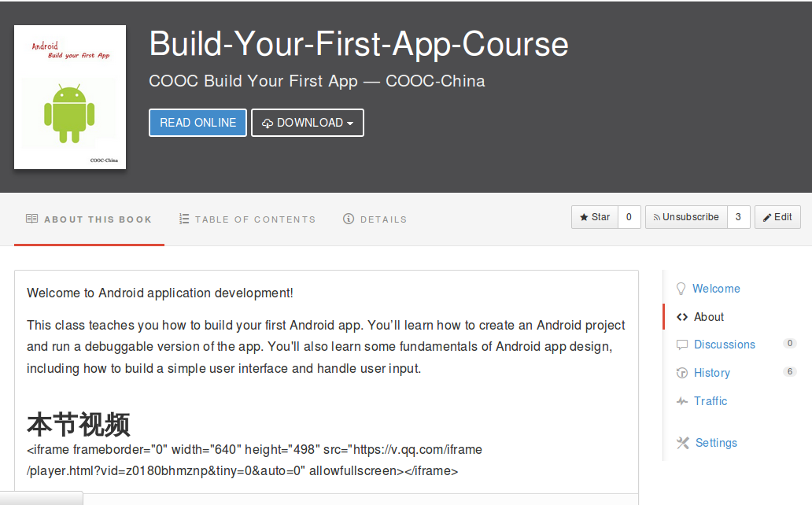

精选课程
Build Your First App
课程简介
Android 开发已经热火朝天，本课程将向你详细讲解 Android 的异步任务和基本组件之一的 Activity
学习完本课程你能掌握：
• Android 的异步任务类 AsyncTask 的原理及使用方法
• Android 基本组件之一的 Activity 的完整的生命周期及使用方法

Android 开发已经热火朝天，本课程将向你详细讲解 Android 的异步任务和基本组件之一的 Activity
学习完本课程你能掌握：
